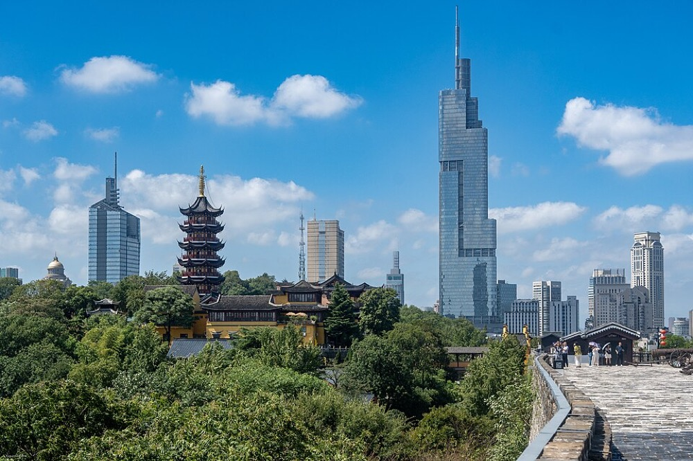
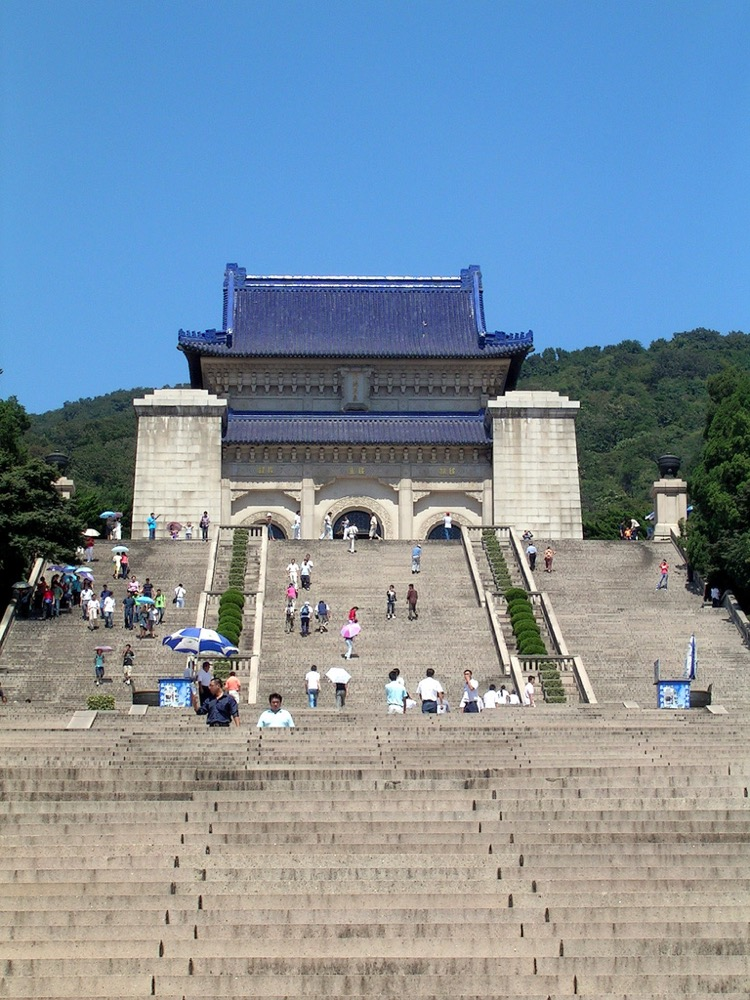
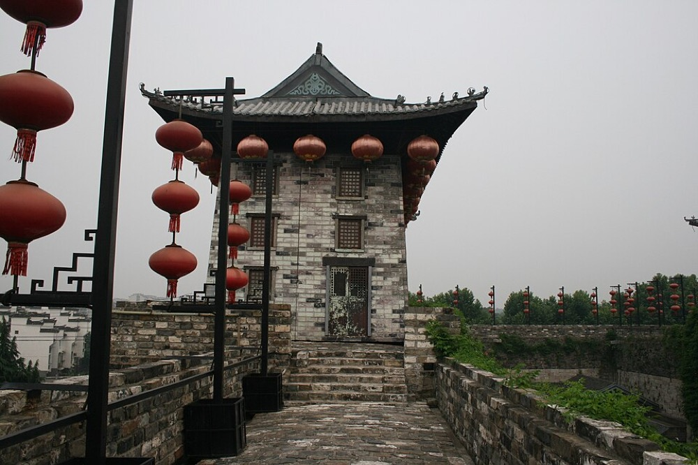
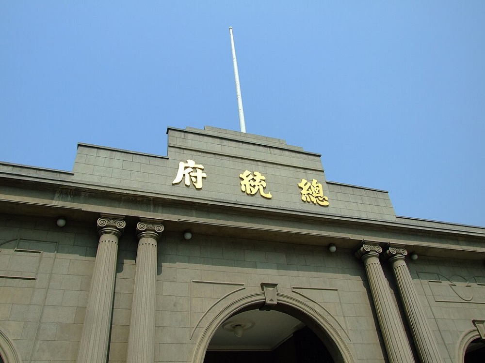
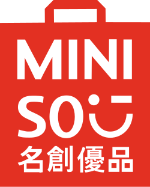
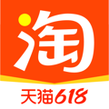

Набережная Циньхуай у храма Конфуция Фуцзымяо — вечерняя визитная карточка Нанкина · фото: Wikimedia Commons
✅ Данные — курсы, часы работы, цены, маршруты — проверены по источникам 25.06.2026.
Цены и часы в Китае меняются и зависят от сезона/праздников — ключевое сверяй в приложении
Amap / на месте. Большинство музеев требуют предварительной онлайн-брони по паспорту
и закрыты по понедельникам.
Фотобот поездки — @nanjing_photo_bot
Сделан специально для нашей группы. Собирает все фото и видео в одну общую папку — заливайте туда классные кадры с поездки, чтобы у каждого осталась память.
📞 Ассистанс страховки «Савитар Груп»+7 495 987 17 75 · Telegram @Savitargrbot · WhatsApp +7 906 762 41 70 У каждого участника своя страховка — используйте свои данные и держите полис под рукой. Контакты даны для ориентира.
💴 Курс на 25.06.2026100 ¥ ≈ 41 BYN ≈ 14,7 USD. По мелочи: 1 ¥ ≈ 0,41 BYN, 1 USD ≈ 6,8 ¥.
🏫 Адрес общежития — показать таксисту:
南京市江宁区东南大学九龙湖校区 兰园3栋
3 вещи, без которых не выходить: телефон с интернетом по eSIM + повербанк · Alipay/WeChat · копия паспорта на бумаге и в фото.
1О Нанкине
Нанкин 南京, «Южная столица», — главный город провинции Цзянсу, на реке Янцзы, ~9,3 млн человек. Это одна из четырёх великих древних столиц Китая наряду с Пекином, Сианем и Лояном, бывшая столица нескольких династий и Китайской Республики. Сегодня — крупный университетский, научный и культурный центр.
Время: Китай — единое время UTC+8. Разница с Минском +5 часов: когда в Минске 12:00, в Нанкине 17:00.
Когда едем: конец июня–июль — сезон сливовых дождей «мэйюй» 梅雨: жарко и влажно. Нанкин — одна из «трёх печей» Китая.

Современный деловой центр Нанкина — вид со старой городской стены: древняя столица и мегаполис рядом. Wikimedia Commons
2История Нанкина
Нанкину более 2500 лет, и он успел побыть столицей десяти династий и государств — отсюда прозвище «столица десяти династий». За века город не раз менял имя: Цзиньлин 金陵, Цзянькан 建康, Цзянье. Краткая хронология:
472 г. до н.э. — на месте города основано первое укреплённое поселение в эпоху Воюющих царств.
Шесть династий, III–VI вв. — Нанкин, тогда Цзянькан, был столицей южных династий, центром буддизма, поэзии и искусства; об этом — Музей шести династий.
Династия Мин, с 1368 г. — император Чжу Юаньчжан сделал Нанкин первой столицей империи Мин. Тогда построили крепостную стену — на тот момент длиннейшую в мире, ~35 км, из которых сохранилось ~25 км, — и гробницу Минсяолин, объект Всемирного наследия ЮНЕСКО.
1853–1864 — Тайпинское восстание: Нанкин, «Небесная столица», был столицей государства тайпинов.
1912 / 1927–1949 — Сунь Ятсен провозгласил здесь Китайскую Республику; Нанкин — её столица. Отсюда Президентский дворец и Мавзолей Сунь Ятсена.
1937 — Нанкинская резня: массовая трагедия при японской оккупации. Ей посвящён Мемориал жертв — место скорби, где ведут себя тихо и без весёлого фото.
История главных достопримечательностей
Мавзолей Сунь Ятсена中山陵 — усыпальница «отца нации», построена в 1926–1929 гг. на склоне Пурпурной горы. Знаменитая лестница из 392 ступеней и синяя черепичная крыша; синий и белый — цвета Гоминьдана.
Городская стена Мин и ворота Чжунхуа中华门 — XIV в. На кирпичах ставили клейма мастеров и чиновников: за брак виновного наказывали — древний «контроль качества». Чжунхуа — сложнейшие ворота с тремя рядами стен и нишами, где прятались солдаты.
Президентский дворец总统府 — здесь были и сады времён Мин–Цин, и резиденция вождя тайпинов, и кабинет Сунь Ятсена, и власть Чан Кайши. Большой музей истории Китайской Республики.
Храм Конфуция, или Фуцзымяо,夫子庙 — храм с 1034 г.; рядом был Цзяннаньский экзаменационный двор — крупнейший в стране центр имперских госэкзаменов. Вокруг — старинный квартал и набережная реки Циньхуай.
Мемориал Нанкинской резни — музей-памятник жертвам 1937 года, одно из самых сильных мест города.

Мавзолей Сунь Ятсена на Пурпурной горе. Wikimedia

Городская стена династии Мин — одна из длиннейших сохранившихся в мире. Wikimedia

Президентский дворец — резиденция Сунь Ятсена и Чан Кайши. WikimediaОзеро Сюаньу на фоне Пурпурной горы. Wikimedia
🟢 Уже в программе лагеря: озеро Сюаньу, храм Конфуция Фуцзымяо, Музей шести династий, Мавзолей Сунь Ятсена, зоопарк Хуншань, обзор Шанхая 08.07.
➕ Чем дополнить самой. 🎫 = нужна предварительная бронь по паспорту; ⛔Пн = закрыто по понедельникам. Часы/цены проверены 25.06.2026.
Место
Часы
Цена
Заметки
Озеро Сюаньу 玄武湖
06:00–22:00 летом
бесплатно 🎫
Парк-озеро, лодки
Храм Цзимин 鸡鸣寺
07:30–17:00
¥10
Буддийский храм у стены
Стена Мин / ворота Чжунхуа 中华门
08:30–21:00
¥34
Прогулка поверху, подсветка
Президентский дворец 总统府
08:30–18:00, вход до 17:00 ⛔Пн
¥25 летом 🎫 за 3 дня
История Республики
Мавзолей Сунь Ятсена 中山陵
08:00–17:00 ⛔Пн
бесплатно 🎫 за 7 дней
Пурпурная гора, много ступеней
Музей шести династий 六朝博物馆
08:30–18:00
¥30, студ. ¥15
Летом по Пн работает
Нанкинский музей 南京博物院
~09:00–17:00 ⛔Пн
бесплатно 🎫
Один из лучших в Китае
Мемориал Нанкинской резни
08:30–17:30 ⛔Пн
бесплатно 🎫
Место скорби, тихо
Храм Конфуция / Фуцзымяо 夫子庙
улица ~08:00–21:00
район бесплатно; залы ¥30–40
Набережная Циньхуай, вечером красиво
💡 Бронь делается в мини-программах WeChat, часто только на китайском, — удобно попросить помочь куратора или китайских студентов из лагеря.
6Чем заняться, кроме осмотра
Вечерняя прогулка по набережной Циньхуай у Фуцзымяо, лодка с подсветкой.
Ночные ярмарки летом на Фуцзымяо и Циньхуай — подсветка, лодочные прогулки, временные выставки в музеях.
Озеро Сюаньу на закате.
Подняться на городскую стену.
Чайная церемония / местный чай.
Пурпурная гора Цзыцзиньшань — парк, канатка, обсерватория.
7Shopping
Всё про покупки в одном месте: где торговые центры, что привезти как сувенир и какие бренды стоит брать. Сегмент брендов: доступныйсреднийпремиум. Электронику вроде Xiaomi и Anker в Китае часто берут выгоднее, чем дома.
🛍️ Где покупать — ТЦ и районы
Кампус Цзюлунху — в районе Цзяннин, не в центре. Что доступно:
На кампусе / пешком: дешёвые студенческие столовые, мини-маркеты, аптечный пункт, кафе.
Ближайший большой досуг — деловой район Байцзяху百家湖 в Цзяннине, несколько остановок на метро или такси, не пешком: крупные ТЦ с магазинами, кино и ресторанами — 景枫 KINGMO, Golden Eagle金鹰 и др. Ближе к метро линии 1, станция «百家湖» Baijiahu.
Часы ТЦ обычно ~10:00–22:00, точные — в Amap.
За центральным шопингом — Синьцзекоу新街口, линия 3/метро в центр.
🎁 Сувениры из Китая
Цены — ориентир при курсе 25.06.2026, 1 ¥ ≈ 0,41 BYN. На рынках и в лавках уместен торг, в ТЦ и супермаркетах — нет.
Сувенир
Что это
Ориентир цены
Чай — улун, пуэр, жасминовый; местный Юйхуа雨花茶
Лучший «съедобный» подарок; брать в специализированных чайных
¥50–300 ≈ 20–120 BYN
Шёлк, платки, нанкинская парча юньцзинь云锦
Визитная карточка Китая; юньцзинь — гордость именно Нанкина
платок ¥100–400 ≈ 40–165 BYN
Складной веер扇子
Бамбук/сандал с росписью — лёгкий и красивый сувенир
¥20–100 ≈ 8–40 BYN
Фарфор из Цзиндэчжэня 景德镇
Чашки, чайные пары, вазы — от традиционных до современных
⚠️ На обратном пути: мясное вроде вакуумной утки и «молочку» через границу везти проблемно — лучше выбирать непортящееся: чай, шёлк, фарфор, веера, сувениры.
🏷️ Качественные бренды, которые стоит купить
Проверены по нескольким источникам как популярные у покупателей и туристов.
📱 Электроника
Xiaomi小米доступный–среднийСмартфоны, умный дом, гаджеты — флагман доступных технологий.
Tenfu's Tea天福茗茶среднийСеть чайных №1 — удобно туристам, есть дегустация.
益
Dayi · TAETEA 大益средний–премиумЭталонный пуэр из Мэнхая.
🛍️ Прочее

Miniso名创优品доступныйНедорогие милые товары и сувениры.
晨
M&G 晨光доступныйКанцелярия и ручки — массовый бренд.
元
Genki Forest 元气森林доступныйГазировка без сахара — модный напиток.
泡
Pop Mart 泡泡玛特среднийКоллекционные фигурки-блайндбоксы — модный сувенир молодёжи.
Международные бренды, что хорошо представлены в Китае, иногда шире выбор или дешевле: Uniqlo, Muji, Decathlon, Nike/adidas, Apple. Где искать: ТЦ Синьцзекоу и Байцзяху, официальные магазины и Tmall/JD; косметику и снеки — в супермаркетах и дрогери.
Где есть: столовые кампуса — дёшево и удобно, лапшичные у кампуса, фудкорты в ТЦ Байцзяху, рестораны Фуцзымяо. Меню часто QR-код на столе. Воду из-под крана не пить. Если есть аллергии — заранее сохранить фразу-карточку на китайском, см. блок 12.
9Подарок принимающей семье из Беларуси
Небольшой подарок из Беларуси — хороший тон и тёплый жест. Идея: что-то с национальным колоритом, вкусное или практичное, и понемногу для разных членов семьи: взрослым — одно, детям — сладости и мелочь.
В Китае ценят уход за кожей — хороший подарок маме или дочке
15–30 BYN
Сувенир из соломки / керамика с белорусским узором
Этнический колорит, ручная работа
10–35 BYN
Магниты, открытки с зубром, аистом, видами Минска
Мелочь для детей и «на память»
3–8 BYN
Бальзам «Беловежская» / медовуха— только взрослым
Если в семье есть взрослые мужчины — статусный «местный» подарок
15–30 BYN
💡 Удачный набор «для семьи»: льняное полотенце с узором + коробка конфет + небольшой сувенир-оберег. Взрослым добавить косметику или бальзам, детям — сладости и магнит. Бюджет ~40–70 BYN смотрится достойно.
🀄 Что любят/ценят китайцы и чего избегать
✅ ХорошоСладости и шоколад · качественный чай/кофе · вещи с национальным колоритом · косметика/уход · красивая красная или золотая упаковка · дарить и принимать двумя руками.
⛔ ИзбегатьЧасы — намёк на «конец» · набор из 4 предметов, где 4 созвучно «смерти» · зонт, созвучный «расставанию» · обувь · зелёный головной убор · бело-/чёрная упаковка · белые и жёлтые хризантемы.
Этикет: подарок могут вежливо сначала отказаться принять — это нормально, предложить ещё раз. Дарить лучше в конце визита.
⚠️ Через границу: в Китай нельзя ввозить мясное и «молочку», поэтому колбасу, сыр и сгущёнку лучше не брать. Безопасный выбор — лён, косметика, конфеты/зефир, сувениры.
10Деньги — подробно
Основа — Alipay支付宝и WeChat Pay微信: оплата по QR почти везде. Установить и верифицировать по паспорту до вылета.
💳 Белорусские карты в Китае — проверено 25.06.2026
Материковый Китай не вводил санкций против банков РБ, поэтому белорусские Visa/Mastercard в целом работают, особенно Mastercard, — но нестабильно, зависит от банка, карты и терминала.
Надёжнее карта несанкционного банка; на февраль 2026 это Приорбанк, БСБ-Банк, Паритетбанк, БНБ-Банк, Zepter, Статусбанк.
Лучше карта в евро — одна конвертация вместо двух.
Комиссия Alipay для иностранных карт — 3% на платежи свыше 200 ¥.
⚠️ Обязательно проверить карту на загранплатёж до вылета.
UnionPay: новые карты в РБ сейчас почти не выпускают — Белгазпромбанк приостановил с 06.05.2026. Старая рабочая UnionPay — надёжна.
Гонконг — исключение, там эквайер HSBC под санкциями, но к Нанкину это не относится.
Наличные USD/EUR про запас → обменять на юани. Ориентир трат: метро ¥2–5, обед в столовой ¥15–30, музей бесплатно–¥40, такси по городу ¥15–40.
11Связь и интернет
Международная eSIM вроде Airalo, Nomad, Holafly = Google/WhatsApp/Telegram/Instagram работают без VPN. Поставить заранее, проверить поддержку eSIM телефоном.
Местная симка дешевле, но за файрволом → нужен VPN; поставить ДО въезда, в Китае не скачать.
Оптимум: eSIM как основной интернет + VPN про запас.
12Язык и общение
Английский знают мало. Главный помощник — переводчик: Google Translate через eSIM или VPN, Baidu Translate, офлайн-словарь Pleco. Скачать офлайн-пакет китайского.
Фото-перевод камерой на меню или вывеску очень выручает.
Адрес показывать иероглифами, см. блок 0.
13Здоровье и безопасность
Страховка: для ориентира — ЗАСО «ТАСК», 50 000 USD, 29.06–10.07; у каждого участника страховщик может быть свой. До врача звонить в ассистанс «Савитар Груп», телефон в блоке 0. Используйте данные своей страховки и держите её под рукой — полис в телефоне.
Аптеки药店 повсюду; взять свои лекарства с запасом + список действующих веществ.
Жара/влажность: пить много воды, головной убор, солнцезащита, не перегреваться.
Безопасность: Китай очень безопасен, в т.ч. вечером. Стандартная бдительность в толпе. Держать связь с куратором и родителями.
При ЧП: 110/120; параллельно — куратору лагеря, при серьёзном — консульству в Шанхае.
14Культура и этикет
Подарки: дарить/принимать двумя руками; могут сперва вежливо отказаться — предложить ещё раз. Избегать часов, наборов из 4 предметов, бело-чёрной упаковки. Хорошо — красная/золотая. Подробно — блок 9.
За столом: не втыкать палочки вертикально в рис; общие блюда брать общей ложкой.
Поведение: в храмах и Мемориале — тихо, без шумного фото.
Торг — на рынках да, в магазинах нет. Фото людей — спрашивать разрешение.
15Практические лайфхаки
Погода на 25.06.2026: +32…35 °C, влажность ~80%, частые дожди сезона мэйюй. Взять: лёгкую дышащую одежду, зонт/дождевик, головной убор, удобную обувь, бутылку для воды, лёгкую кофту от кондиционеров.
На длительные экскурсии брать с собой воду, перекус, повербанк и головной убор; удобная обувь обязательна.
Туалеты: в метро/ТЦ есть; своя салфетка не лишняя.
Повербанк обязателен: телефон — это карта, связь и навигация.
Часы: ТЦ ~10:00–22:00, музеи ~08:30–17:30, многие ⛔ по Пн.
Wi-Fi в кафе есть, но к заблокированным сервисам всё равно нужен eSIM/VPN.
16Свободное время — идеи под расписание
Программа плотная; свободны в основном вечера и отдельные окна.
Вечер у кампуса: ужин в столовой или лапшичной, ТЦ Байцзяху с кино и едой — линия 1.
Вечер в центре: Фуцзымяо/Циньхуай с подсветкой — самый атмосферный вечер; метро ~40–60 мин.
Утро/окно: озеро Сюаньу или храм Цзимин со стеной — они рядом друг с другом.
⚠️ После целого дня экскурсий по жаре силы на вечер ограничены — не перегружать.
17Контакты и ссылки
Лагерь/организатор
вписать контакт куратора по приезде
Генконсульство РБ, Шанхай
china.shanghai@mfa.gov.by · shanghai.mfa.gov.by
Посольство РБ, Пекин
+86 10 6532 1691 · china@mfa.gov.by
Ассистанс страховки
+7 495 987 17 75 · Telegram @Savitargrbot
Экстренные КНР
110 / 120 / 119 · туристическая 12301
Родители
основной способ связи — мессенджер через eSIM
18Сборы — чек-лист «что взять»
Документы: загранпаспорт и копии на бумаге и в фото, распечатки билетов/брони/программы, полис, адрес общежития иероглифами.
Техника: телефон с eSIM, универсальный переходник типа A/I, повербанк, зарядки, наушники.
Деньги: проверенная карта Visa/MC плюс UnionPay про запас, наличные USD/EUR.
Одежда/быт: лёгкая одежда по жаре, зонт/дождевик, головной убор, удобная обувь, лёгкая кофта, бутылка для воды, влажные салфетки.
Аптечка: лекарства с запасом + список действующих веществ, от солнца, пластыри, средства ЖКТ.
Подарок принимающей семье на день в семье 05.07 — небольшой, из Беларуси, см. блок 9.
19Приложения для поездки
⚠️ Главное: платёжные приложения, переводчик и VPN ставить и проверять ДО вылета — в Китае их магазины и сайты часто недоступны. Иконки и ссылки ведут в App Store / Google Play.
Alipay 支付宝Суперапп №1: оплата по QR, такси, билеты, мини-программы. Привязать карту, верификация по паспорту.App StoreGoogle Play
WeChat 微信Мессенджер + оплата + мини-программы. Основное общение в Китае.App StoreGoogle Play
Amap 高德地图Главный навигатор Китая: точные карты, метро, автобусы, пешие маршруты. Есть офлайн-карты.App StoreGoogle Play
MetroMan ChinaОфлайн-схемы метро городов Китая, включая Нанкин и Шанхай, — маршруты и пересадки без интернета.App StoreGoogle Play
Maps.meОфлайн-карты и навигация без интернета — выручает, если сел трафик.App StoreGoogle Play
Trip.comБилеты на поезда и самолёты, отели; англоязычный — удобно для поезда в Шанхай.App StoreGoogle Play
Variflight 飞常准Отслеживание статуса рейсов в реальном времени — задержки, гейты, прилёты.App StoreGoogle Play
Meituan 美团Доставка еды, заказ столиков, услуги и скидки рядом.App StoreGoogle Play

Taobao 淘宝Крупнейший маркетплейс Китая — онлайн-покупки чего угодно.App StoreGoogle Play
Яндекс ПереводчикПеревод текста, голоса и по фото — наводишь камеру на меню или вывеску. Есть офлайн-режим.App StoreGoogle Play
trainchineseСловарь и карточки для изучения китайского — для языкового лагеря.App StoreGoogle Play
Du ChineseЧтение текстов на китайском по уровням сложности — практика для лагеря.App StoreGoogle Play
Astrill VPNПопулярный платный VPN для Китая — надёжно обходит файрвол. Поставить ДО въезда.App StoreGoogle Play
VPN
AoxVPNVPN для обхода «Великого файрвола». Поставить ДО въезда. Точное приложение сверь по названию в сторе.Найти в App StoreGoogle Play
VPN
Lite VPNЛёгкий запасной VPN. Поставить ДО въезда. Точное приложение сверь по названию в сторе.App StoreGoogle Play
Если кнопка ведёт на поиск в сторе — выбери приложение с точным названием из списка. Для Android многие китайские приложения ставятся из местных сторов/APK, если их нет в Google Play.